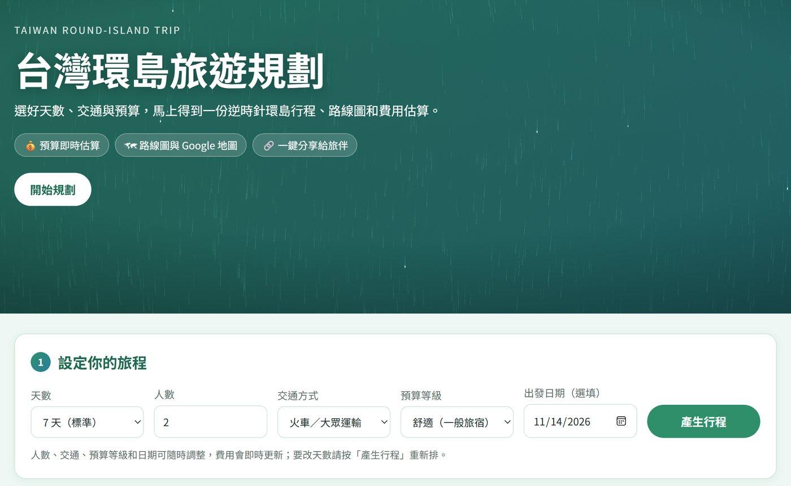
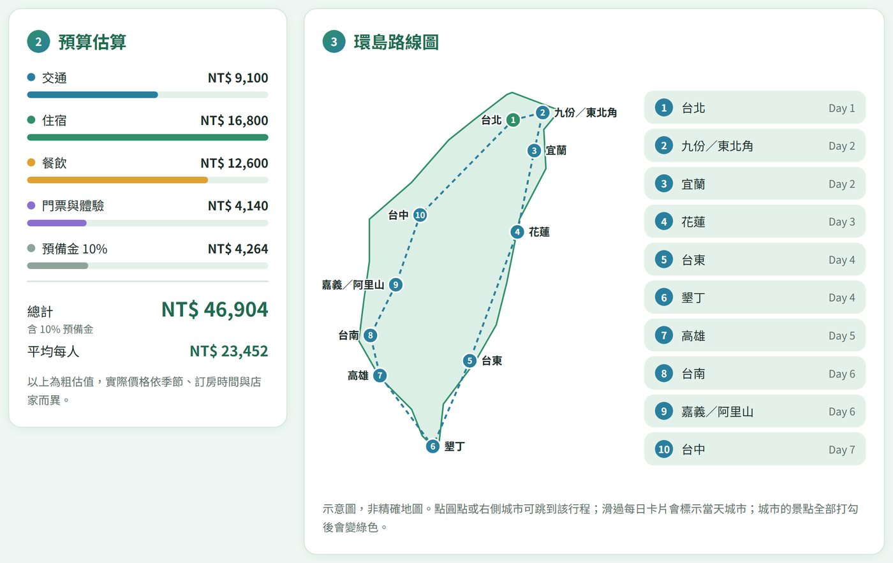
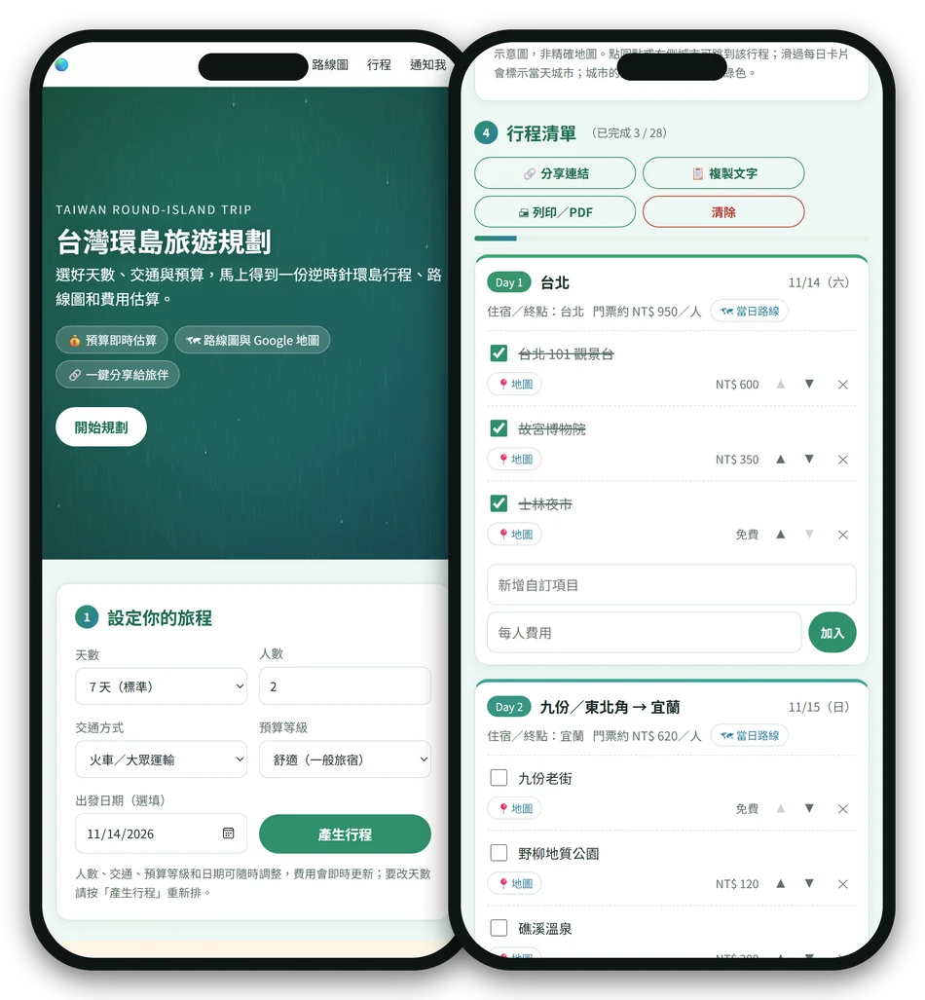

Taiwan Round-Island Trip
台灣環島旅遊規劃
選好天數、交通與預算，馬上得到一份逆時針環島行程、路線圖和費用估算。
7 天預設行程
10 座城市
28 個景點
天數可選 5／7／10；景點數為 7 天預設行程。
litilitai.github.io/taiwan-loop-trip
網站實際畫面

怎麼用
三步驟，排好整趟環島
1
設定旅程
天數、人數、交通方式（火車、自駕、機車、單車）、預算等級，出發日期可選填。
2
自動排行程
依逆時針路線分配每天的景點，可刪減、調整順序、新增自訂項目，並邊玩邊打勾。
3
分享與出發
景點與每日路線一鍵開 Google 地圖；複製連結或文字給旅伴，也能列印成 PDF。
預算與路線圖

預算即時估算路線示意圖季節與颱風提醒
完成進度條複製成 LINE 文字深色模式
特色與取得方式
純靜態、免費、手機也好用
純靜態網站
只用 HTML、CSS、JavaScript，不用安裝、不用建置，發布在 GitHub Pages，打開網址就能用。
資料留在你手上
你的行程只存在自己的瀏覽器。通知名單寫入 Supabase，且只允許新增、不能被公開讀取。
手機與深色模式
版面自動適應手機寬度，並跟隨系統的深色模式。

litilitai.github.io/taiwan-loop-trip
原始碼：github.com/litilitai/taiwan-loop-trip